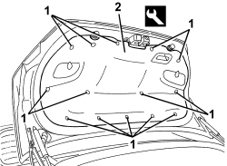

7025B18 BOOT LID LINING - R+R
- Path
- Procedures > 70 FITTINGS > 7025 COMPARTMENT COVERS > 7025B BOOT LID > 7025B18 BOOT LID LINING - R+R
- Kind
- repair procedure (removal / refitting; the operation number is the code)
- Applies to
- all engines; all production periods
- Interactive page
- https://sloeber94.github.io/elrnDB/alfa/159/en/#/939011215
Applies to: all engines; all production periods
 Removing
Removing
 Refitting
Refitting- Open the boot lid.
1. Release the retaining buttons using the special tool.
Tool | Description | Function | Validity |
|---|---|---|---|
1823015000 | Knife | Retainer removal |
2. Remove the trim.

Applies to: all engines; all production periods
Refitting
Removing- Check that the trim is not damaged.
- Position the cover and fasten it using the retaining buttons.
- Close the boot lid.